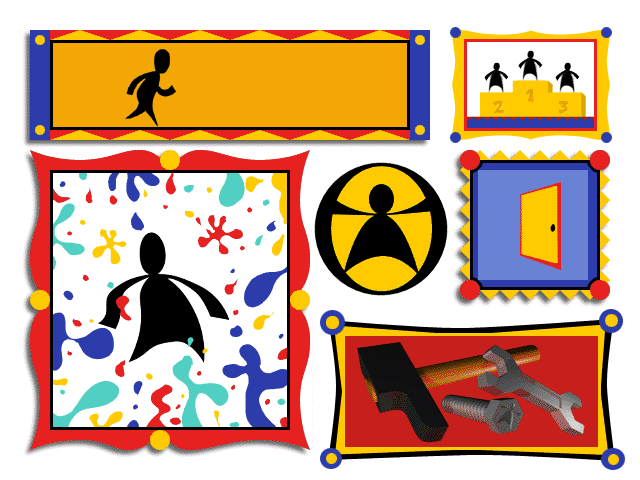
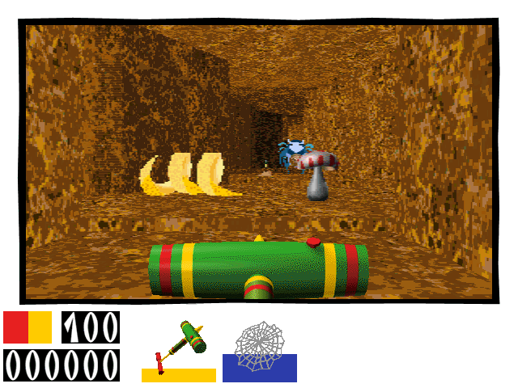

名稱：魔域奇兵 (Pikto，英文版)
簡介：Phaestos 1998年出品的第一人稱射擊遊戲，由E.M.M.E代理發行。台灣由曉騰中文化
並代理發行，但也只是中文化安裝程式而已，遊戲內容依然是英文的 [待補]。


保護：光碟
備註：遊戲雖可在Windows上安裝，但遊戲本身仍為DOS程式，在XP以上系統執行時會有相容
性問題，建議在DosBox上安裝執行。
備註：使用DosBox執行時，速度不可太快，否則不易操控。